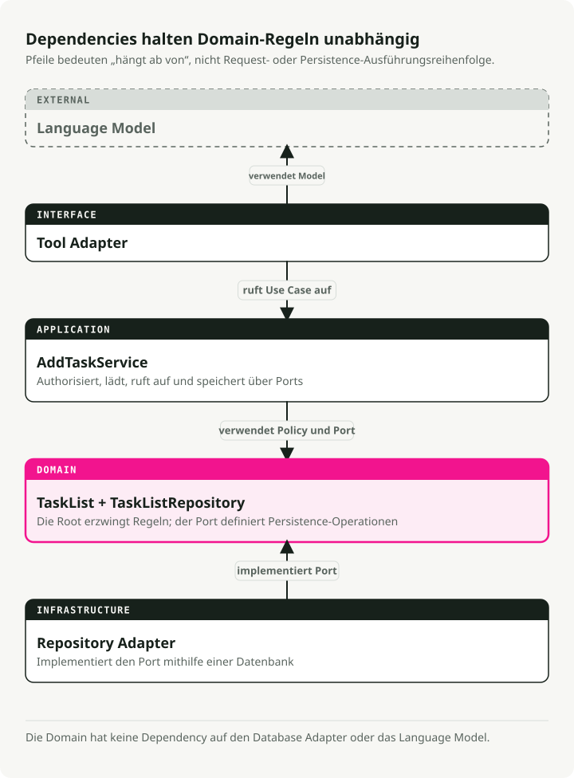
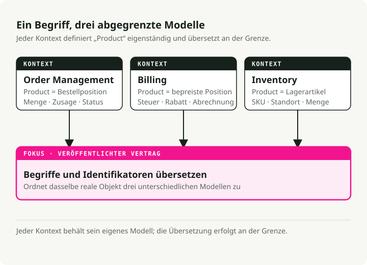
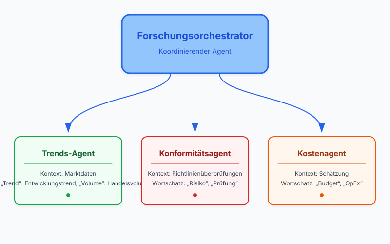
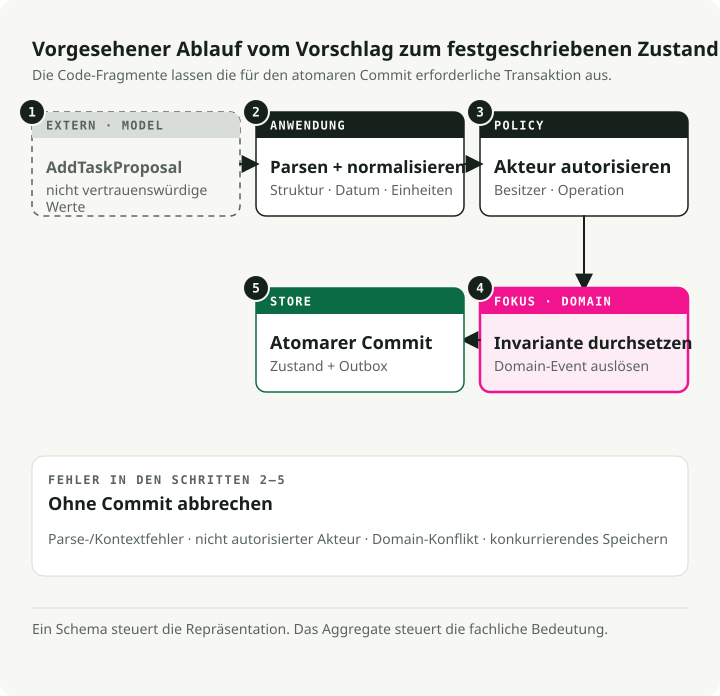
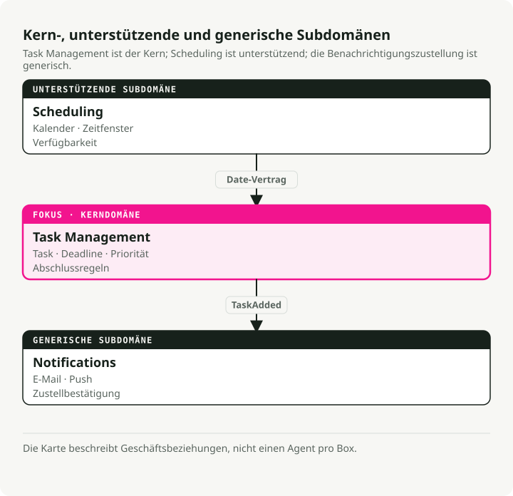

Automatische Übersetzung
Dieser Artikel wurde automatisch aus der englischen Originalversion übersetzt.
Domain-Driven Design für AI Agents: Bounded Contexts, Tools und Geschäftsregeln
TL;DR
Domain-Driven Design (DDD) gibt AI-Agent-Teams ein gemeinsames Vokabular und klare Trennlinien zwischen Subsystemen. Nutzen Sie es, wenn sich Ihre Prompts vom Geschäft entfernt haben und Ihre Regeln über Templates verstreut sind.

Warum Domain-Driven Design für AI Agents wichtig ist
Die meisten Agent-Projekte scheitern nicht, weil der Code schlecht ist. Sie scheitern, weil die Personen, die Prompts schreiben, und die Personen, denen der Geschäftsprozess tatsächlich gehört, sich nicht darauf einigen können, was irgendetwas bedeutet. Compliance fordert einen „Policy Check“ und bekommt eine process_data()-Methode zurück. Niemand weiß, was sie tut, also driften Anforderungen ab und das System verkrustet.
DDD behebt das, indem die Business-Domäne ins Zentrum gestellt wird. Nicht das Datenbankschema. Nicht das Prompt-Template. Sondern der tatsächliche reale Prozess, den Sie modellieren wollen. Die praktischen Effekte:
- Gemeinsame Sprache. Product, Ops und Engineering verwenden dieselben Begriffe. Wenn Compliance „refund request“ sagt, erscheint genau das in Ihrem Code, Ihren Prompts und Ihrer Dokumentation.
- Fokussierter Scope. Sie bauen, was zählt: die zentralen Workflows und die Regeln, für die tatsächlich jemand verantwortlich ist. Weniger Glue Code, der bei geänderten Anforderungen bricht.
- Anpassungsfähigkeit. Wenn sich Policies ändern, aktualisieren Sie einen klar abgegrenzten Teil statt in einem Monolithen danach zu suchen.
Das ist besonders wichtig in Domänen, in denen sich Regeln oft ändern: Finanzen, Gesundheitswesen, regulierte Abläufe. DDD gibt Ihnen zumindest eine realistische Chance, mitzuhalten.
Strategische Bausteine
DDD ist ein Werkzeugkasten aus Mustern und keine einzelne Idee. Üblicherweise wird er in zwei Hälften geteilt:
- Strategic Design: das „große Ganze“. Grenzen, Teams und die Kommunikation zwischen Systemen definieren. Das ist essenziell für Multi-Agent-Systeme.
- Tactical Design: Muster auf Code-Ebene (Entities, Aggregates), die die interne Logik Ihres Agents sauber halten.
Die folgenden Konzepte sind die, die Sie im Alltag tatsächlich verwenden.
Ubiquitous Language
Das gemeinsame Vokabular, das überall auftaucht: in Meetings, Dokumentation, Prompts, Methodennamen. Es gibt keine Übersetzungsschicht zwischen „Business-Sprache“ und „Code-Sprache“.
Wenn Compliance „policy check“ sagt, dann heißt Ihre Methode run_policy_check() und nicht process_data(). Wenn Ärztinnen und Ärzte „admit patient“ sagen, schreiben Sie admit_patient() und nicht add_user().
class PatientRegistry:
def admit_patient(self, patient_id: str) -> None:
"""Admit a patient to the registry - term used by medical staff."""
...
Wenn die Sprache im Code zur Sprache im Raum passt, zeigen sich Anforderungsänderungen als offensichtliche Umbenennungen an einer Stelle. Sie hören auf, darüber zu diskutieren, was process_data eigentlich tun sollte.
Bounded Contexts
Große Systeme brauchen explizite Grenzen. Warum? Weil dasselbe Wort in verschiedenen Teilen des Geschäfts etwas anderes bedeutet.
Nehmen Sie „product“ im E-Commerce. Im Kontext Inventory ist ein Produkt ein Katalogeintrag mit SKUs und Lagerbeständen. Im Kontext Billing ist es eine Position mit Preisregeln und Steuerberechnungen. In Order Management ist es eine Menge und ein Lieferzusagenmodell.
Bounded Contexts erlauben jeder Subdomäne ihre eigene Definition ohne Konflikte. Übersetzungsschichten oder Interfaces verbinden sie, wenn sie miteinander sprechen müssen.

So bleibt jedes Modell klein und es entsteht kein einziges gigantisches „product“-Objekt, das gleichzeitig drei Teams zufriedenstellen muss.
Entities und Value Objects
Das sind die grundlegenden Bausteine Ihres Domänenmodells.
Entities haben eine Identität, die über die Zeit bestehen bleibt. Ein Task mit der ID 123 ist dieselbe Aufgabe, auch wenn Sie Beschreibung, Status oder Fälligkeitsdatum ändern. Zwei Entities sind gleich, wenn sie dieselbe ID haben, unabhängig von ihren Attributen.
from pydantic import BaseModel
class SupportTicket(BaseModel):
ticket_id: str # This is the identity
customer: str
issue: str
status: str = "OPEN"
def close(self) -> None:
if self.status != "OPEN":
raise ValueError("Ticket already closed")
self.status = "CLOSED"
Value Objects haben keine Identität. Sie werden vollständig durch ihre Attribute definiert. Zwei TimeSlot-Objekte mit denselben Start- und Endzeiten sind austauschbar. Value Objects sind unveränderlich; statt eines zu mutieren, erstellen Sie ein neues.
from pydantic import BaseModel
class TimeSlot(BaseModel):
start: str # e.g., "2025-10-18 09:00"
end: str # e.g., "2025-10-18 10:00"
@property
def duration(self) -> int:
# Compute duration from start to end
...
Verwenden Sie Entities für Dinge mit Lebenszyklus (Order, User, AgentSession). Verwenden Sie Value Objects für Beschreibungen und Messwerte (EmailAddress, Priority, Location).
Aggregates
Aggregates sind Gruppen verwandter Entities und Value Objects, die als eine Einheit behandelt werden. Innerhalb eines Aggregates müssen Geschäftsregeln immer erfüllt sein. Genau darum geht es.
Jedes Aggregate hat genau eine Aggregate Root, also die Entity, die den Zugriff auf alles im Inneren steuert. Sie wollen etwas im Aggregate ändern? Gehen Sie über die Root. Die Root erzwingt Invarianten, damit das Aggregate nicht in einen fehlerhaften Zustand gerät.
from datetime import date
from pydantic import BaseModel, Field
class Task(BaseModel):
id: str
description: str
completed: bool = False
class Plan(BaseModel): # This is the aggregate root
id: str
tasks: list[Task] = Field(default_factory=list)
def add_task(self, task: Task) -> None:
# Business rule enforced here: no duplicate task IDs
if any(t.id == task.id for t in self.tasks):
raise ValueError("Task ID already exists")
self.tasks.append(task)
Externer Code greift niemals direkt auf die Liste tasks zu. Er ruft immer add_task() auf. Das garantiert, dass die Regel „keine doppelten IDs“ nicht verletzt werden kann. Wenn Sie in eine Datenbank speichern, speichern Sie typischerweise das gesamte Aggregate auf einmal.
Repositories
Repositories kapseln die Persistenzschicht. Aus Sicht der Domäne rufen Sie save(plan) und get(plan_id) auf. Dass diese Aufrufe am Ende Postgres oder Redis treffen, ist das Problem von jemand anderem.
Daraus ergeben sich zwei Vorteile. Tests können ein In-Memory-Repository statt gemockter Datenbankaufrufe verwenden. Und wenn Sie später SQLite gegen etwas Schwergewichtigeres austauschen, bewegen sich die Geschäftsregeln nicht.
from abc import ABC, abstractmethod
from pydantic import BaseModel, Field
class Task(BaseModel):
id: str
description: str
completed: bool = False
class Plan(BaseModel):
id: str
tasks: list[Task] = Field(default_factory=list)
class PlanRepository(ABC):
"""Domain layer defines the interface."""
@abstractmethod
def save(self, plan: Plan) -> None:
...
@abstractmethod
def get(self, plan_id: str) -> Plan | None:
...
class InMemoryPlanRepository(PlanRepository):
"""Infrastructure layer provides the implementation."""
def __init__(self) -> None:
self.storage: dict[str, Plan] = {}
def save(self, plan: Plan) -> None:
self.storage[plan.id] = plan
def get(self, plan_id: str) -> Plan | None:
return self.storage.get(plan_id)
Ihr Domänencode kennt nur PlanRepository (das Interface). Die Infrastrukturschicht steckt die tatsächliche Implementierung ein.
Domain Events
Domain Events erfassen wichtige Dinge, die in Ihrem System passiert sind. Die Benennung steht in der Vergangenheit (OrderPlaced, TaskCompleted, PaymentFailed), weil sie Fakten und keine Kommandos beschreiben.
Events machen implizite Seiteneffekte explizit. Statt dass ein Modul ein anderes direkt aufruft, wenn etwas passiert, löst die Domäne ein Event aus. Andere Teile des Systems abonnieren es und reagieren unabhängig.
from datetime import datetime
from pydantic import BaseModel
class TaskCompleted(BaseModel):
task_id: str
completed_at: datetime
Wenn eine Aufgabe abgeschlossen wird, emittieren Sie TaskCompleted. Ein Benachrichtigungsdienst könnte dieses Event abonnieren und eine E-Mail senden. Ein Reporting-Service könnte es für Analytics protokollieren. Der wichtige Punkt: Das Task-Aggregate muss nichts über E-Mails oder Analytics wissen. Es meldet nur, was passiert ist.
So bleibt die Kommunikation über Kontextgrenzen hinweg entkoppelt. Das passt auch natürlich zu Multi-Agent-Systemen, da Agents ohnehin über Events aufeinander reagieren.
DDD auf Agent-Architekturen übertragen
Reale Agent-Systeme haben mehrstufige Workflows, LLM-Ausgaben, die einen gewissen Prozentsatz falsch sind, und Anforderungen, die sich jedes Quartal ändern. Die DDD-Muster passen zufällig sehr gut zu genau diesen Problemen.
Bounded Contexts werden zu Agents oder Skills
Jeder Agent (oder jede größere Fähigkeit) ist ein Bounded Context. Ein Research-Orchestrator könnte drei spezialisierte Agents koordinieren:
- Trends Agent — sammelt Marktdaten mit eigenem Vokabular und eigenen Tools
- Compliance Agent — führt Policy Checks mit regulatorischer Terminologie aus
- Cost Agent — schätzt Kosten mit finanzspezifischen Regeln
Jeder hat sein eigenes Modell, seine eigene Terminologie und seine eigenen Invarianten. Sie kommunizieren über klar definierte Interfaces oder Events.

Selbst in einem Single-Agent-System können Sie interne Kontexte definieren. Zum Beispiel ein Planning-Modul und ein Execution-Modul, jeweils mit eigenem Domänenmodell.
Prompts respektieren die Ubiquitous Language
Verwenden Sie Domänenbegriffe in System-Prompts, Tool-Beschreibungen und Function Signatures. Wenn Compliance-Expertinnen und -Experten „policy check“ sagen, gehört genau diese Formulierung in Ihre Prompts und in Ihren Code. Der Vorteil ist unspektakulär, aber wichtig: Wenn ein Agent-Trace run_policy_check zeigt, kann das Compliance-Team ihn ohne Übersetzer lesen.
Zustand wird zu expliziten Entities
LLMs sind oft zustandslos, aber reale Agents verfolgen reichlich Zustand: Konversationssitzungen, Ziele, Zwischenergebnisse, Tool-Outputs. Modellieren Sie diese als Entities oder Value Objects:
- Entity
ConversationSessionmit ID und Nachrichtenhistorie - Entity
Taskals Repräsentation von Arbeitseinheiten - Value Object
ToolOutputfür unveränderliche Ergebnisse
Sobald diese Objekte explizit sind, können Sie Validierung und Geschäftsregeln daran hängen. Eine Entity Task kann sich weigern, abgeschlossen zu werden, bevor ihre Abhängigkeiten fertig sind, statt dass diese Regel in drei verschiedenen Prompt-Templates lebt.
Aggregates drücken Agent-Pläne aus
Eine Aggregate Root Plan steuert die Aufgabenliste und erzwingt die Grenzen, die das Geschäft interessieren. Wenn ein LLM vorschlägt, 50 Aufgaben hinzuzufügen, Ihre Policy aber 10 erlaubt, lehnt das Aggregate die zusätzlichen ab. Wenn es doppelte Arbeit vorschlägt, weist das Aggregate auch das zurück. Das Modell darf enthusiastisch sein; die Domäne bleibt konsistent.
Domain Events treiben die Orchestrierung
Agents lösen Events wie ResearchCompleted, ThresholdExceeded oder PolicyViolationDetected aus. Andere Agents oder Services abonnieren sie und reagieren. Nichts ist fest verdrahtet, und genau das macht das Hinzufügen eines neuen Listeners (oder eines neuen Agents) günstig.
Geschäftsregeln umschließen AI-Aktionen
LLM-Ausgaben fließen durch Domain Services oder Entity-Methoden statt direkt in die Datenbank. Wenn ein Modell eine Rückerstattung außerhalb der Policy-Grenzen vorschlägt, validiert und verwirft Ihr RefundRequest sie. Das LLM kann improvisieren; die Geschäftsregeln haben das letzte Wort.
Die Anti-Corruption Layer (ACL)
Ein LLM ist probabilistisch und liegt gelegentlich auf überraschende Weise falsch. Ihr Domänenmodell muss deterministisch bleiben. Beides kann nicht direkt aufeinandertreffen.
Genau das ist die Aufgabe der Anti-Corruption Layer (ACL).

Die ACL sitzt zwischen dem Modell und der Domäne. Sie übersetzt die Roh-Ausgabe des LLM in die strikten Typen, die Ihre Domäne erwartet.
- Ingest von Rohtext oder JSON aus dem LLM.
- Validate von Struktur und Typen mit Pydantic-Modellen.
- Sanitize von Werten (keine negativen Preise, keine Transaktionen mit Datum in der Zukunft usw.).
- Translate von DTOs (Data Transfer Objects) in Domain Entities.
Wenn die Validierung fehlschlägt, lehnt die ACL die Daten ab und gibt den Fehler oft an das LLM zurück, damit es einen weiteren Versuch machen kann. Der Punkt ist einfach: Nur valide Daten berühren jemals Ihre zentrale Geschäftslogik.
Beispiel: ein Task Assistant modelliert mit DDD
Wir bauen einen persönlichen Task Assistant, der Anfragen wie „Erinnere mich morgen daran, Milch zu kaufen“ oder „Was steht auf meiner To-do-Liste?“ verarbeitet. Der Walkthrough wendet die DDD-Bausteine oben nacheinander an.
1. Die Kontexte abbilden
Beginnen Sie damit, das Problem in Subdomänen zu zerlegen:
- Task Management — Verarbeitung von To-do-Elementen und Erinnerungen (Kerndomäne)
- Scheduling — Kalendereinträge und Meetings
- Notifications — Versand von Alerts und E-Mails
Wir konzentrieren uns zuerst auf Task Management. Die anderen können sich als separate Bounded Contexts oder begleitende Agents weiterentwickeln.

2. Dieselbe Sprache sprechen
Legen Sie das Vokabular zusammen mit den Personen fest, denen der Prozess tatsächlich gehört (oder nutzen Sie bei einer persönlichen App gesunden Menschenverstand): „task“, „deadline“, „reminder“, „priority“. Verwenden Sie dann genau diese Begriffe in Prompt-Templates, Methodennamen und UI-Labels. Es gibt keine separate „Business“-Übersetzung.
3. Entities, Value Objects und Events erfassen
Modellieren Sie jetzt die Kernkonzepte:
- Entity:
Taskmit Identität (id) und veränderlichem Zustand (completed) - Value Object: Enum
Priority(unveränderlich, durch seinen Wert definiert) - Domain Event:
TaskCompletedEventals Signal, wenn Arbeit abgeschlossen wurde
from datetime import datetime, date, timezone
from enum import Enum
from pydantic import BaseModel, Field
class Priority(Enum):
"""Value object: priority is defined by its value alone."""
LOW = 1
NORMAL = 2
HIGH = 3
class TaskCompletedEvent(BaseModel):
"""Domain event: announces a task was completed."""
task_id: str
time: datetime
class Task(BaseModel):
"""Entity: identity persists even as attributes change."""
id: str
description: str
created_at: datetime = Field(default_factory=lambda: datetime.now(timezone.utc))
due_date: date | None = None
priority: Priority = Priority.NORMAL
completed: bool = False
def mark_completed(self) -> TaskCompletedEvent:
"""Business rule: can't complete an already-completed task."""
if self.completed:
raise ValueError("Task is already completed.")
self.completed = True
return TaskCompletedEvent(task_id=self.id, time=datetime.now(timezone.utc))
Die Geschäftsregel (Sie können keine bereits abgeschlossene Aufgabe erneut abschließen) lebt in der Entity-Methode und nicht in einem Prompt-Template.
4. Das Aggregate formen
Das TaskList ist unsere Aggregate Root. Es enthält mehrere Entities Task und erzwingt Konsistenzregeln über sie hinweg. Alle Änderungen laufen über die Methoden der Root.
from datetime import date
from pydantic import BaseModel, Field
class Task(BaseModel):
id: str
description: str
due_date: date | None = None
completed: bool = False
class TaskList(BaseModel):
"""Aggregate root: enforces invariants across all tasks."""
owner: str
tasks: list[Task] = Field(default_factory=list)
def add_task(self, task: Task) -> None:
"""Business rule: no duplicate tasks on the same day."""
if any(
existing.description == task.description
and existing.due_date == task.due_date
for existing in self.tasks
):
raise ValueError("A similar task on that date already exists.")
self.tasks.append(task)
def get_pending(self) -> list[Task]:
"""Query helper: find tasks that aren't done yet."""
return [task for task in self.tasks if not task.completed]
TaskList.model_rebuild() # Resolve forward references for Pydantic.
Externer Code greift niemals direkt auf tasks zu. Er geht immer über add_task() oder eine andere Root-Methode, und genau das hält die Regel „keine Duplikate“ durchsetzbar.
5. Persistenz in ein Repository kapseln
Das Repository abstrahiert die Speicherung. Die Domänenschicht weiß nicht, ob Tasks im Speicher oder in Postgres liegen.
from pydantic import BaseModel, Field
class Task(BaseModel):
id: str
description: str
completed: bool = False
class TaskList(BaseModel):
owner: str
tasks: list[Task] = Field(default_factory=list)
TaskList.model_rebuild() # Resolve forward references for Pydantic.
class TaskRepository:
"""Abstracts task storage - in-memory implementation for simplicity."""
def __init__(self) -> None:
self._data: dict[str, TaskList] = {}
def get_task_list(self, owner: str) -> TaskList:
"""Retrieve a user's task list, or create a new empty one."""
return self._data.get(owner, TaskList(owner=owner))
def save_task_list(self, task_list: TaskList) -> None:
"""Persist changes to the task list."""
self._data[task_list.owner] = task_list
In Produktion würden Sie das gegen eine datenbankgestützte Implementierung austauschen (mit SQLAlchemy oder direkt mit Postgres), ohne den Domänencode anzufassen.
6. Den Flow ausführen
Wenn eine Nutzerin oder ein Nutzer eine Anfrage stellt, sieht der Flow so aus:
from datetime import date, timedelta
from uuid import uuid4
from pydantic import BaseModel, Field
class Task(BaseModel):
id: str
description: str
due_date: date | None = None
completed: bool = False
class TaskList(BaseModel):
owner: str
tasks: list[Task] = Field(default_factory=list)
def add_task(self, task: Task) -> None:
if any(
existing.description == task.description
and existing.due_date == task.due_date
for existing in self.tasks
):
raise ValueError("A similar task on that date already exists.")
self.tasks.append(task)
class TaskRepository:
def __init__(self) -> None:
self._data: dict[str, TaskList] = {}
def get_task_list(self, owner: str) -> TaskList:
return self._data.get(owner, TaskList(owner=owner))
def save_task_list(self, task_list: TaskList) -> None:
self._data[task_list.owner] = task_list
TaskList.model_rebuild() # Resolve forward references for Pydantic.
# User says: "Remind me to buy milk tomorrow"
# (In reality, an LLM would parse this into structured data)
user_input = "Remind me to buy milk tomorrow"
intent = "add_task"
# Initialize repository
repo = TaskRepository()
if intent == "add_task":
# 1. Load the user's task list
task_list = repo.get_task_list(owner="User123")
# 2. Create a new task entity
task = Task(
id=str(uuid4()),
description="buy milk",
due_date=date.today() + timedelta(days=1),
)
# 3. Domain layer enforces business rules
try:
task_list.add_task(task)
repo.save_task_list(task_list)
print(f"Task '{task.description}' added for {task.due_date}.")
except Exception as exc:
print(f"Sorry, I couldn't add that task: {exc}")
Die Schichten bleiben getrennt:
- LLM-Schicht parst natürliche Sprache in strukturierte Daten (Intent + Parameter)
- Domänenschicht erzwingt Geschäftsregeln über Entity-Methoden
- Repository-Schicht übernimmt Persistenz, ohne in die Domänenlogik hineinzulecken
Das LLM kann beim Parsen kreativ sein, aber die Domäne entscheidet, was konsistent ist. Wenn es versucht, eine doppelte Aufgabe hinzuzufügen, lehnt die Aggregate Root das ab. Sie brauchen dafür keine Spezialklausel in Ihrem Prompt.
Tooling, um das Modell zum Leben zu bringen
DDD erfordert keine speziellen Frameworks. Einige Tools machen die Umsetzung jedoch glatter, besonders für AI Agents.
FastAPI
FastAPI lässt sich sauber auf DDD-Schichten abbilden. Verwenden Sie Router, um Bounded Contexts zu trennen (/tasks, /schedule), Pydantic-Modelle für Request- und Response-Validierung und Dependency Injection, um Repositories zu verdrahten.
Strukturieren Sie Ihr Projekt in Schichten:
project/
├── domain/ # Pure business logic (entities, aggregates, value objects)
├── application/ # Use cases and command handlers
├── infrastructure/ # Repositories, databases, external APIs
└── interface/ # FastAPI routers and HTTP contracts
Diese Schichtung (manchmal „Onion Architecture“ genannt) verhindert, dass Änderungen durch die gesamte Codebasis weitergereicht werden. Ein Datenbankwechsel bedeutet, dass Sie infrastructure/ und sonst nichts anfassen. Eine UI-Änderung bedeutet, dass Sie interface/ und sonst nichts anfassen.
Pydantic und Pydantic AI
Pydantic erzwingt Invarianten und validiert Daten zur Laufzeit. Verwenden Sie es für Entities, Value Objects und insbesondere für die Validierung von LLM-Ausgaben.
Pydantic AI geht noch einen Schritt weiter: Es erzwingt, dass LLM-Responses zu Ihren Domänenschemata passen. Definieren Sie ein AddTaskCommand mit Pflichtfeldern, und Pydantic AI validiert die JSON-Ausgabe des Modells, bevor Ihr Code sie berührt.
Instructor ist hier eine weitere Option. Es patcht OpenAI-Clients (und andere), damit sie direkt Pydantic-Modelle zurückgeben, was ein leichtgewichtiger Weg ist, eine Anti-Corruption Layer zu implementieren.
DDD-Hilfsbibliotheken
- DDDesign — stellt Basisklassen für Entities, Repositories und Value Objects auf Basis von Pydantic bereit
- Protean — ein vollständiges Framework für DDD, CQRS und Event Sourcing, falls Sie etwas möchten, das viele gebrauchsfertige Features direkt mitbringt
Die meisten Python-Entwickler überspringen diese Bibliotheken und verwenden normale Klassen mit Pydantic, aber für große Projekte lohnt sich ein Blick.
Event-getriebenes Tooling
Für Domain Events bieten sich an:
- blinker — leichtgewichtiger In-Process-Event-Dispatcher
- redis-py Pub/Sub oder RabbitMQ — für verteilte Events über Services oder Agents hinweg
- asyncio event patterns — wenn Sie ohnehin bereits async arbeiten
Events sind essenziell für Multi-Agent-Orchestrierung. Ein Agent emittiert ResearchCompleted; andere abonnieren das und reagieren. Kein Agent muss wissen, wer zuhört.
Agent-Frameworks
LangChain, LangGraph, Haystack, Semantic Kernel, LlamaIndex, AutoGen, Google ADK, smolagents und CrewAI liefern Struktur für Agent-Workflows. Verwenden Sie sie in Ihrer Application- oder Infrastructure-Schicht und kapseln Sie sie hinter Interfaces, die Ihrer Domänenschicht gehören. Dann wird auch ein Framework-Wechsel zu einer begrenzten Änderung.
Testing
Ein praktischer Vorteil von DDD: Die Domänenschicht lässt sich testen, ohne dass der gesamte Stack laufen muss.
- PyTest für Unit-Tests auf Entities und Aggregates
- Fake-Repositories (In-Memory) für Integrationstests
- LLM-Stubs, die vorgegebene Outputs zurückgeben
Ihr Domänencode sollte niemals ein laufendes LLM brauchen, um Tests auszuführen. Das LLM ist ein Implementierungsdetail. Die Tests validieren Geschäftsregeln.
Checkliste für den Einstieg
Eine praktische Reihenfolge, wenn Sie ein neues Agent-Projekt beginnen:
- Mit Domain Experts sprechen. Entwerfen Sie die Ubiquitous Language. Schreiben Sie sie auf.
- Bounded Contexts abbilden. Zeichnen Sie die Subdomänen und markieren Sie, wo sie miteinander sprechen müssen. Beginnen Sie mit einem zentralen Kernkontext.
- Entities und Value Objects modellieren. Welche Dinge haben Identität? Welche sind nur Werte? Backen Sie Invarianten in ihre Methoden ein.
- Aggregate Roots definieren. Bündeln Sie verwandte Entities unter einer Root, die Konsistenzregeln erzwingt.
- Repository-Interfaces erstellen. Implementieren Sie die Speicherung noch nicht. Definieren Sie nur
save()undget(). Die Domäne bleibt unbewusst darüber, wo Daten liegen. - Domain Events emittieren. Lösen Sie für bedeutende Änderungen (order placed, task completed) Events aus. Verdrahten Sie Listener später nach Bedarf.
- LLM-Outputs in Schemas kapseln. Verwenden Sie Pydantic-Modelle, um Contracts zu erzwingen. Freitext sollte nicht in Ihre Domäne durchsickern.
- Orchestrierung hinzufügen. Bauen Sie Application Services, die Agents über strukturierte Commands oder Events koordinieren.
Die Regel, die wirklich zählt: Beginnen Sie mit der Domäne, nicht mit dem Tech-Stack. Verstehen Sie zuerst das Geschäftsproblem. Modellieren Sie es explizit. Bringen Sie dann das AI-Tooling ins Spiel, um genau dieses Modell zu unterstützen.